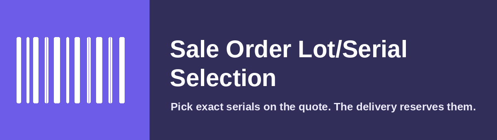

Choose the precise lot or serial numbers for a product directly on the sale order line. When the order is confirmed, the delivery reserves exactly the serials you picked instead of letting the warehouse grab whatever the removal strategy returns. Change your mind on a confirmed order and the reservation follows.
A Lot/Serial Numbers field appears on each sale order line. It only offers serials with real, unreserved stock on hand, so you cannot promise something you do not have.
The chosen serials are reserved on the outgoing transfer automatically, and the Serial/Lot column is shown on the delivery by default so the warehouse sees exactly what to ship.
It restricts the reservation engine's input rather than rewriting move lines after the fact. Partial availability, backorders, unreserve and full traceability keep working exactly as Odoo intends.
For serial-tracked products the ordered quantity matches the number of serials selected, with a safeguard that keeps the two consistent.
Odoo 19 (Community or Enterprise). Depends on Sales and Inventory. Works with products tracked by Lot or by Serial Number.
Fizzy Projects Ltd · hello@fizzyprojects.com · www.fizzyprojects.com